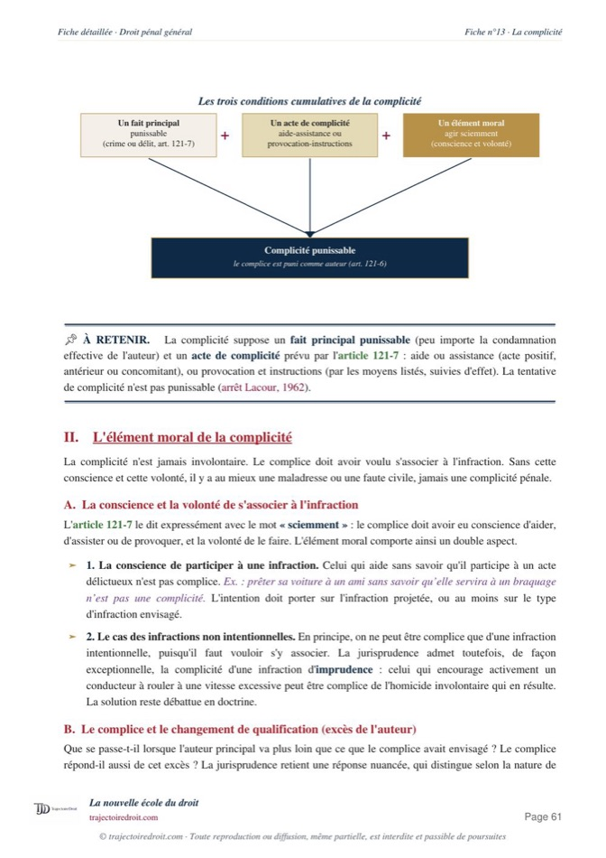

L'arrêt Halimi, expliqué simplement
Le 14 avril 2021, la chambre criminelle de la Cour de cassation confirme l'irresponsabilité pénale de Kobili Traoré, l'homme qui a tué Sarah Halimi en 2017 en pleine bouffée délirante due au cannabis. Elle juge que l'article 122-1 du Code pénal traite le trouble qui abolit le discernement de la même façon quelle que soit son origine, y compris une drogue prise volontairement. Cette solution a provoqué la loi du 24 janvier 2022.
L'essentiel en une phrase
Le 14 avril 2021, la chambre criminelle de la Cour de cassation confirme l'irresponsabilité pénale de Kobili Traoré, l'homme qui a défenestré sa voisine Sarah Halimi en 2017. Les experts avaient conclu à une abolition de son discernement, c'est-à-dire de sa capacité à comprendre ce qu'il faisait et à contrôler ses actes, au moment des faits, causée par une bouffée délirante sous l'effet du cannabis. La Cour juge que l'article 122-1 du Code pénal n'opère aucune distinction selon l'origine de ce trouble, y compris quand il s'agit d'une drogue prise volontairement.
Cette affaire dépasse largement le cadre d'un cours de droit. Elle a suscité des manifestations dans plusieurs villes de France, une intervention du président de la République, et surtout une réforme législative complète en janvier 2022, car un raisonnement juridique techniquement solide peut heurter le sentiment collectif de justice, au point de pousser le législateur à combler la faille qu'il révèle.
L'arrêt Halimi applique l'article 122-1 du Code pénal tel qu'il existait déjà, dans le respect du principe d'interprétation stricte de la loi pénale, une règle qui interdit au juge d'ajouter une condition ou une exception que le texte ne prévoit pas. Cette fidélité au texte a provoqué le scandale, et donc la réforme.

Fiche complète
Droit pénal L2
Les faits, une bouffée délirante sous cannabis
Le 4 avril 2017, vers 4 heures du matin, Kobili Traoré, 27 ans, pénètre dans l'appartement voisin du sien, rue de Vaucouleurs, dans le 11e arrondissement de Paris. Il séquestre un temps la famille qui y habite, puis passe par le balcon pour entrer chez sa voisine, Sarah Halimi, une femme de 65 ans, médecin retraitée et ancienne directrice de crèche, qu'il frappe violemment en criant des insultes et « Allahu akbar », avant de la jeter du troisième étage. Il déclarera ensuite avoir « tué le sheitan du quartier », le mot arabe pour désigner le démon.
Kobili Traoré avait déjà une vingtaine de condamnations pour violences, vols et infractions liées aux stupéfiants, et consommait du cannabis depuis l'adolescence. Les jours précédant le meurtre, son comportement devient étrange. Il pense être empoisonné et ensorcelé par ses voisins. La nuit des faits, il a fumé environ dix joints.
Trois expertises psychiatriques se succèdent au cours de l'instruction, avec des conclusions qui divergent. La première, en septembre 2017, retient une simple altération du discernement et non une abolition totale. La deuxième, en juin 2018, conclut au contraire à une abolition du discernement et du contrôle des actes. Une contre-expertise, en mars 2019, confirme cette abolition et l'explique par une bouffée délirante aiguë d'origine exotoxique, c'est-à-dire une crise psychotique brutale causée par une substance extérieure au corps, ici le cannabis.
La procédure, du non-lieu au pourvoi
Le 12 juillet 2019, les juges d'instruction concluent à l'irresponsabilité pénale de Kobili Traoré. Le 19 décembre 2019, la chambre de l'instruction de la cour d'appel de Paris confirme cette irresponsabilité. Elle reconnaît au passage le caractère antisémite du crime, ce qui compte comme circonstance aggravante en temps normal, mais n'a ici aucune incidence sur une personne jugée irresponsable, et elle ordonne son hospitalisation sous contrainte, avec des mesures de sûreté pour vingt ans.
Les parties civiles, c'est-à-dire la famille de Sarah Halimi, refusent cette solution et forment un pourvoi en cassation. Elles reprochent aux juges du fond d'avoir retenu l'irresponsabilité sans distinguer selon l'origine du trouble, alors que ce trouble résultait ici d'une drogue prise volontairement, et non d'une maladie mentale indépendante de la volonté de l'auteur. L'affaire arrive ainsi devant la chambre criminelle de la Cour de cassation.
Le problème de droit
L'irresponsabilité pénale prévue par l'article 122-1, alinéa 1er, du Code pénal peut-elle être retenue lorsque l'abolition du discernement résulte d'une consommation volontaire de substances psychoactives ? Autrement dit, le juge peut-il distinguer entre un trouble d'origine pathologique, qui n'engage en rien la volonté de la personne, et un trouble provoqué par une drogue que la personne a choisi de prendre, alors que le texte de loi ne fait lui-même aucune distinction ?
La solution de la Cour de cassation
La Cour de cassation rejette le pourvoi des parties civiles. Elle confirme l'irresponsabilité pénale de Kobili Traoré et pose un principe d'interprétation stricte de l'article 122-1.
Le principe posé par l'arrêt
« Les dispositions de l'article 122-1, alinéa 1er, du code pénal, ne distinguent pas selon l'origine du trouble psychique ayant conduit à l'abolition de ce discernement. »Cass. crim., 14 avril 2021, n° 20-80.135, publié au Bulletin
La Cour constate qu'aucun élément du dossier ne montre que Kobili Traoré aurait consommé du cannabis en connaissant le risque de déclencher un trouble psychique aussi grave. Aucun texte ne permettait alors de traiter différemment une drogue prise volontairement, une exception que la loi ne créera qu'en 2022. Une intoxication volontaire au cannabis produit donc exactement le même effet juridique qu'une maladie mentale spontanée, dès lors qu'elle aboutit à la même abolition totale du discernement.
Tu révises ton droit pénal ?
Reçois gratuitement mon guide « Réviser le droit sans s'épuiser ». La méthode que mes élèves utilisent pour retenir les grands arrêts sans les bachoter la veille.
Le sens du raisonnement, la lettre stricte de la loi
Pour comprendre cette décision, il faut d'abord comprendre ce qu'exige le principe d'interprétation stricte de la loi pénale. Ce principe interdit au juge d'ajouter à un texte pénal une condition qu'il ne contient pas, même quand cette condition semblerait de bon sens. L'article 122-1, alinéa 1er, écarte la responsabilité pénale de toute personne atteinte, au moment des faits, d'un trouble psychique ou neuropsychique ayant aboli son discernement ou le contrôle de ses actes. Le texte ne dit rien sur l'origine de ce trouble. Il n'exige ni qu'il soit involontaire, ni qu'il échappe à tout choix de la personne.
La Cour de cassation en tire une conséquence logique. Si le législateur avait voulu exclure les troubles nés d'une drogue prise volontairement, il aurait dû l'écrire. Puisqu'il ne l'a pas fait, le juge n'a pas le pouvoir de le faire à sa place, même si le résultat choque. Cette rigueur protège en réalité tous les justiciables, car un juge qui s'autoriserait à ajouter des conditions non écrites dans un sens pourrait tout aussi bien en ajouter dans l'autre, contre l'accusé cette fois.
Le raisonnement s'appuie enfin sur une donnée médicale précise, à savoir la notion de bouffée délirante aiguë. Ce trouble psychotique bref, qui peut être déclenché par une forte consommation de cannabis chez une personne déjà fragile, produit sur le cerveau un effet comparable à celui d'une maladie mentale classique. Une fois cette abolition du discernement médicalement constatée, la loi de l'époque ne permettait plus de la traiter différemment selon sa cause.
Pourquoi cette décision a-t-elle changé la loi ?
La solution, bien que juridiquement solide, a choqué l'opinion publique au point de pousser le législateur à intervenir. Ses répercussions dépassent largement le cadre des facultés de droit. Dès l'annonce de l'irresponsabilité en première instance, le 5 janvier 2020, des manifestations éclatent à Paris, Marseille, Montpellier, Bastia et Ajaccio. Le président Emmanuel Macron déclare, le 23 janvier 2020 à Jérusalem, que même si la justice devait retenir l'irresponsabilité pénale, le besoin d'un procès reste réel pour la famille de la victime. Après l'arrêt du 14 avril 2021, entre 20 000 et 26 000 personnes manifestent place du Trocadéro à Paris et dans d'autres villes, sous le mot d'ordre « Sans justice, pas de République ». Une tribune signée par dix-sept intellectuels, dont Michel Onfray, Alain Finkielkraut et Élisabeth Badinter, dénonce dès 2017 ce qu'ils appellent un déni du crime.
Le gouvernement réagit vite. Emmanuel Macron affirme, le 18 avril 2021, que « décider de prendre des stupéfiants et devenir alors comme fou ne devrait pas, à mes yeux, supprimer votre responsabilité pénale ». Le Parlement adopte la loi n° 2022-52 du 24 janvier 2022, relative à la responsabilité pénale et à la sécurité intérieure, qui crée deux articles nouveaux dans le Code pénal pour combler exactement la faille révélée par l'arrêt Halimi.
L'article 122-1-1 écarte désormais l'irresponsabilité de l'alinéa 1er quand l'abolition du discernement résulte d'une consommation volontaire de substances psychoactives réalisée dans le dessein de commettre l'infraction, ou une infraction de même nature, ou d'en faciliter la commission. C'est ce qu'on appelle la théorie de l'actio libera in causa, l'action libre dans sa cause, une idée selon laquelle une personne reste responsable d'un acte commis sans discernement si elle a elle-même organisé, en amont et en pleine conscience, les conditions de cette perte de discernement. Cette condition reste exigeante, puisqu'il faut prouver que l'agent s'est drogué dans le but précis de passer à l'acte. Elle n'aurait sans doute pas concerné Kobili Traoré lui-même, qui n'avait pas prémédité son geste avant de consommer le cannabis. L'article 122-1-2 vise pour sa part la simple altération du discernement, moins grave que l'abolition. Il écarte la réduction de peine habituelle quand cette altération résulte d'une consommation illicite ou manifestement excessive, sans exiger la preuve d'un dessein particulier. Le Conseil constitutionnel a examiné cette loi dans sa décision n° 2021-834 DC du 20 janvier 2022. Il n'a rien trouvé à redire aux deux nouveaux articles du Code pénal, qui n'étaient d'ailleurs pas contestés devant lui, et n'a censuré que des dispositions distinctes, relatives aux drones de la police municipale.
Si tu veux revoir tout le programme de la matière, les causes de non-imputabilité, la contrainte et la légitime défense comprises, ma fiche de droit pénal L2 reprend chaque notion et chaque grand arrêt à connaître, cet arrêt Halimi et les autres. Les deux autres grands arrêts de cette matière portent sur un chapitre voisin, celui des éléments de l'infraction. L'arrêt Lacour fixe la frontière entre l'acte préparatoire et le commencement d'exécution de la tentative, et l'arrêt Perdereau consacre la répression de l'infraction impossible.
La critique doctrinale
La solution rendue le 14 avril 2021 reste, sur le plan technique, considérée par la majorité des pénalistes comme juridiquement solide. Elle applique l'article 122-1 tel qu'il existait, sans le déformer, dans le droit fil du principe d'interprétation stricte de la loi pénale. Une partie de la doctrine y voit même une décision courageuse, rendue alors que la pression médiatique et politique poussait vers une solution inverse.
D'autres commentateurs relèvent un paradoxe qui a nourri la controverse. En matière délictuelle ordinaire, l'ivresse ou la prise de stupéfiants sont en général traitées comme des circonstances qui n'excusent rien, parfois même comme des circonstances aggravantes. Dans cette affaire, la même consommation volontaire devient au contraire, une fois poussée jusqu'à l'abolition totale du discernement, une cause d'irresponsabilité complète. Cette différence de traitement selon le seuil atteint par le trouble a nourri le sentiment d'un vide juridique, plus que d'une injustice voulue par les juges eux-mêmes.
La réforme de 2022 est elle-même discutée. Son exigence d'un dessein de commettre l'infraction, condition de l'article 122-1-1, est jugée par une partie de la doctrine si étroite qu'elle ne changerait presque rien en pratique. Une personne qui se drogue sans intention criminelle précise, puis commet un crime en pleine bouffée délirante, resterait irresponsable exactement comme Kobili Traoré, même après cette loi. La réforme ne couvre donc qu'un cas d'école étroit, sans changer l'équilibre posé par l'arrêt Halimi lui-même.
Comment utiliser cet arrêt dans une copie
Dans un cas pratique. Tu cites cet arrêt dès qu'un énoncé décrit une personne ayant commis une infraction alors qu'elle avait consommé volontairement de l'alcool ou une drogue. Tu vérifies d'abord la date des faits. Pour des faits commis avant le 25 janvier 2022, le raisonnement de l'arrêt Halimi s'applique, et l'origine du trouble ne compte pas. Pour des faits postérieurs, il faut aussi vérifier les conditions des articles 122-1-1 et 122-1-2, notamment le dessein de commettre l'infraction.
Dans une dissertation sur l'interprétation de la loi pénale. Cet arrêt illustre parfaitement la tension entre la lettre de la loi et le sentiment de justice, et il donne un bon point de départ pour toute réflexion sur les limites du pouvoir du juge pénal. Pour la méthode complète, tu peux consulter ma page sur la fiche d'arrêt et celle sur le raisonnement juridique étape par étape.
Les erreurs à éviter avec cet arrêt
- Confondre l'abolition et l'altération du discernement. Seule l'abolition totale, retenue ici après plusieurs expertises contradictoires, entraîne l'irresponsabilité complète. Une simple altération laisse la personne responsable, avec une peine réduite.
- Croire que la loi de 2022 aurait changé le sort de Kobili Traoré lui-même. L'article 122-1-1 exige un dessein de commettre l'infraction au moment de la consommation, une condition que rien dans le dossier ne permettait d'établir dans cette affaire précise.
- Appliquer la loi de 2022 à des faits antérieurs à son entrée en vigueur. Les articles 122-1-1 et 122-1-2 ne valent que pour les faits commis après le 25 janvier 2022. Pour des faits antérieurs, seul le raisonnement de l'arrêt Halimi s'applique.
- Citer l'arrêt sans expliquer le principe d'interprétation stricte qui le fonde. Le correcteur attend que tu montres pourquoi la Cour ne pouvait pas distinguer selon l'origine du trouble sans un texte qui l'y autorise, et non simplement que tu connaisses la date et le nom de l'affaire.
- Confondre l'abolition du discernement avec l'état de nécessité. L'article 122-1 efface la responsabilité parce que le trouble psychique de l'auteur a supprimé sa capacité de choisir. L'article 122-7 répond à une situation inverse, un choix conscient fait face à un danger, comme dans le jugement Ménard de 1898.
Questions fréquentes
Que dit l'arrêt Halimi du 14 avril 2021 ?
L'arrêt Halimi est-il toujours d'actualité ?
Comment citer l'arrêt Halimi en copie ?
Pourquoi dit-on que l'affaire Halimi a changé la loi ?
Quelle différence entre l'abolition et l'altération du discernement dans cette affaire ?
Le droit pénal va bien au-delà du trouble psychique.
Ma fiche de droit pénal L2 reprend chaque grand arrêt et chaque notion, expliqués simplement et prêts à servir en commentaire comme en dissertation.
Voir la fiche de droit pénal L2